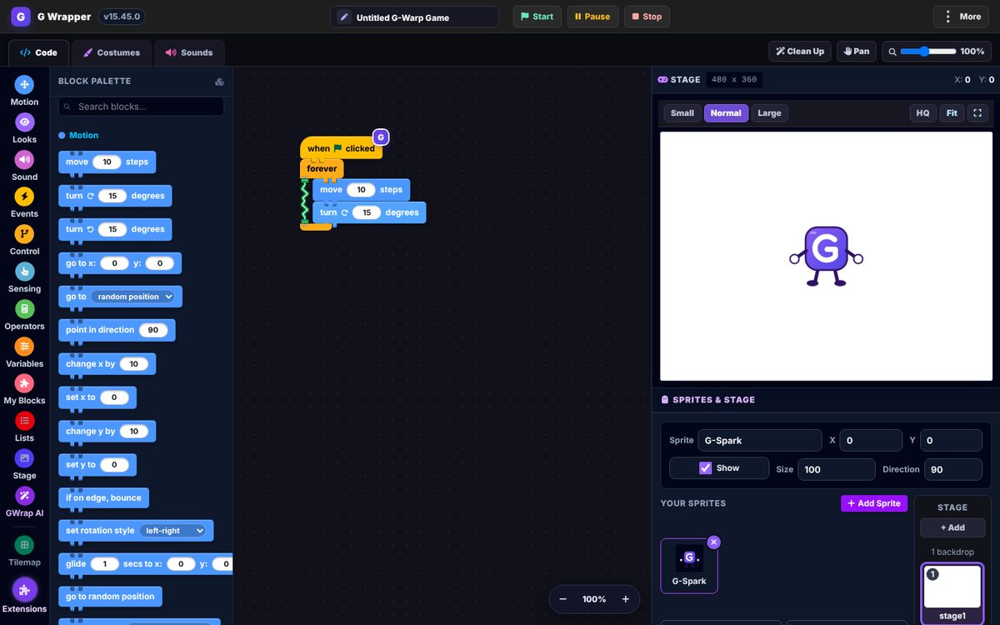
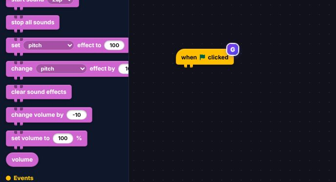
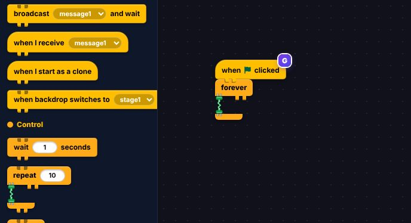
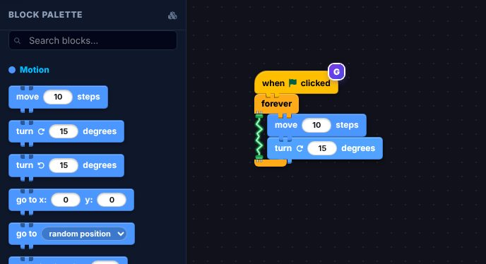
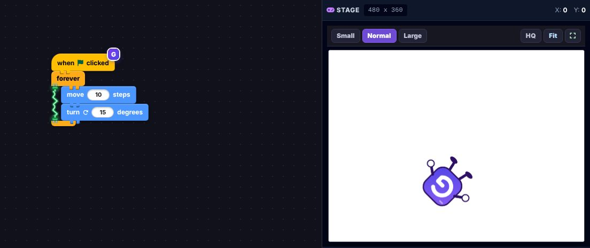
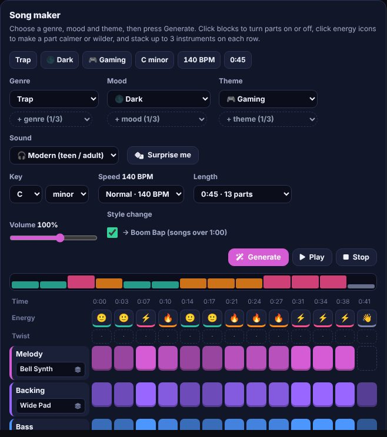
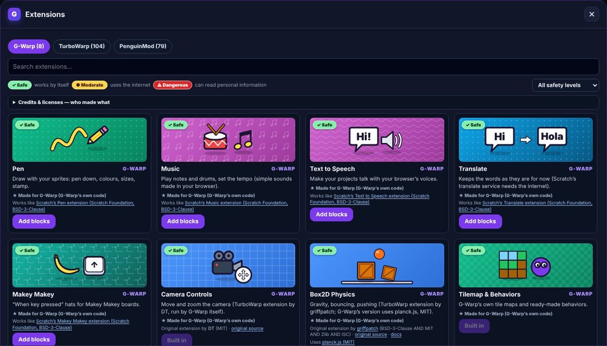

Free beta · no account · made by Creapter
A block coding game maker where the blocks run on electricity. Same blocks you know from Scratch, its own look, and a few things Scratch doesn't have.
Opens .sb3 (Scratch, TurboWarp) and .pmp (PenguinMod) files. Made for computers, not phones.

There are dozens of Scratch mods and fan-made editors out there. Some are great, some aren't, and a lot of them got abandoned. I want G-Warp to be one of the good ones, and one that keeps going.
I learned to code on Scratch. When I was about 10 I made my own Smash Bros-style game there, with a sword fighter, a dodge roll, air attacks and a smash attack. After that came a space game, and a top-down shooter that I'm still working on today.
Even if G-Warp doesn't become your main editor, take something from it. Make your game's music in the Song maker or your animations in the Animation tab, then bring them back to whatever you use.
I used TurboWarp and PenguinMod for free, so G-Warp is free too. I'm not part of them, but I'd love to work with them, and if they like an idea from G-Warp, they're welcome to use it. It's open source, so if someone wants to rebuild it or keep it going one day, they can. At the end of the day, this is a fan-made project.
Open the editor and snap these together. That's a whole project.

Drag when flag clicked into the code area.

Snap forever under it. Everything inside keeps repeating.

Put move 10 steps and turn 15 degrees inside. See the wire? That's the electricity.

G-Spark spins around the stage. Change the numbers while it runs and watch what happens.
The normal Scratch stuff is all there. These are the parts I'm proudest of.
Pick a genre, a mood and a theme, then press Generate. You get a full track (melody, bass, drums) split into parts you can switch on and off.
Every part has an energy level: calm, happy, wild or fire. There's also a loop maker, instruments and a sound editor in the same tab.

G-Warp's own extensions plus the TurboWarp and PenguinMod galleries, all credited to the people who made them. Before you add one, you can see what it can do:
Anything that could read personal info is always marked Dangerous and warns you first.

What changed lately. The full list is in the changelog.
Games run a lot faster. Scripts started by a broadcast now run in the same frame, like in Scratch. One test game went from about 10 updates a second to 30.
Purple electricity. Blocks the built-in AI helper makes glow purple, yours glow green, so you can always see what's yours.
Animation tools. Costume folders, gliding between poses, flipbook and onion skin.
It works like the editors you know. It just doesn't look like them.
No one else's art or logos. Every extension maker gets credited, every licence followed.
No accounts and nothing that tracks who you are. Anything risky warns you before it runs.
Yes. It's open source under the MIT licence. The code is on GitHub.
Most normal projects should. It's still a beta, so keep a copy of your file and test it. Compatibility notes
On your computer, wherever your browser saves downloads. There's no cloud and no account.
Not yet. It's made for a computer with a mouse and keyboard.
Nice, that's how it gets better. Write down what you did, what you expected and what happened instead. How to report it
It takes about ten seconds to open. No sign-up, nothing to install.